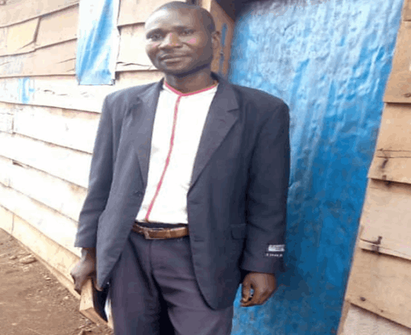

NOTRE EQUIPE



Né à Katana dans la Province du Sud-Kivu à 40 Km de la ville de Bukavu, dans une famille de 10 enfants d’où il est le sixième, il a fait ses études Primaires à Katana et Secondaires à l’institut de Bagira à Bukavu avant de rejoindre l’Université de Goma (UNIGOM), il reçoit l’appel alors qu’il est Étudiant en première année graduat à la Faculté des Sciences Sociales Administratives et Politiques, département des Relations Internationales (première promotion), conduit par le Seigneur dans une église appelée REHOBOTH ou il sera baptisé quelque temps après son appel et sera secrétaire de l’église avant de commencé le 08/02/2008 son voyage vers la vie désert. Il ouvrira une chambre de prière à Makeni Lusaka en Zambie ou plusieurs personnes venues du Zimbabwe voisin après les violences postes électorales de 2008 ont pris part surtout au programme de la prière matinale et à la même occasion il fait la connaissance des plusieurs serviteurs de Dieu dont : Tafa du Zimbabwe, la pasteur Mike de Lubumbashi (actuellement aux usa) et le pasteur Abraham Kamalamba de la Zambie. Le seigneur l’a amené ensuite au Malawi après une épreuve, ou il est arrivé le 30/09/2008 de là, le Seigneur a envoyé l’apôtre Justine Nanfuka de L’église CHRISTIAN REVIVAL MINISTRIES INTERNATIONAL de Kampala en Ouganda pour le consacrer pasteur, il a ainsi été consacré pasteur le 29/09/2009 à 15h20. Après consécration il dirige le ministère BETHZATHA à Dzaleka ou il fera connaissance d’autres serviteurs de Dieu au Malawi dont l’apôtre Médard Yusufu, l’apôtre Kiza Kisose, le pasteur Kamanga, le pasteur Hubert, le pasteur Jonas, le pasteur Penge Dunia Timothée, le pasteur John Monko, le pasteur Fabien, l’évangéliste Nepomsene, l’évangéliste Eto Kiza… Dans le ministère BETHZATHA, il a fait connaissance de beaucoup des serviteurs et servantes de Dieu qui sont aujourd’hui au quatre coins du monde (Europe, Usa, Canada, Australie, Nouvelle Zélande et en Afrique) et le Seigneur les utilisent puissamment actuellement partout où ils passent.
C’est en juillet 2013, que le Seigneur lui donna sur le pont de l’autoroute reliant deux communes (Ans & Awans) de la ville de Liège en Belgique le nom ‘’International Revival Ministries’’ « IRM CHURCH », l’année suivante il prépare les documents administratifs ainsi que la logistique pour commencer l’église et le 01/01/2016 I.R.M
CHURCH ouvre ses portes en République Démocratique du Congo (Bukavu Katana et Kabamba) et au Malawi (Dowa). Plusieurs membres seront baptisés en RDC et au Malawi, jusqu’aujourd’hui l’église compte des centaines des membres.
De 2013 à 2016, il obtient son Diplôme d’Initiation à la Théologie (DIT) du premier cycle et le 18/08/2016 il obtient son Diplôme Supérieur de la Théologie (DST) deuxième cycle de Bibledoc à Stafford aux USA avec comme spécialité : Études Bibliques.
Né à Chombo dans la province du Sud Kivu, il a fait ses études primaires et secondaires à Katana, il reçoit le Seigneur dès le jeune âge et servira dans l’église comme choriste puis évangéliste avant de rejoindre I.R.M CHURCH en 2016, il est le responsable de I.R.M CHURCH à Katana Centre.
Né à Chisheke Kalehe dans la province du Sud-Kivu, il a fait ses études primaires et secondaires à …, reçoit Jésus dès le jeune âge et travaillera comme évangéliste dans une église locale avant de rejoindre IRM CHURCH en 2017 et sera le responsable de la paroisse de Kabamba Chabwinemwami à 50 km de la ville de Bukavu direction Nord-Kivu.

Né à Mabingu dans la Province du Sud-kivu, il a fait ses études primaires et secondaires à Mabingu, dès l’âge de douze ans il est appelé par le seigneur comme prophète puis sera baptisé et sera respectivement choriste avant d’être président de la chorale puis évangéliste et président de la jeunesse de son église locale et en 2017 le seigneur l’a amené rejoindre I.R.M CHURCH et il est actuellement l’assistant du responsable de I.R.M CHURCH paroisse de Kabamba.

KatanaDemocratic Republic of the Congo
Email:irmchurch2016@yahoo.com
Phone: ++243 899 948 823
Facebook
Twiter
Instagram